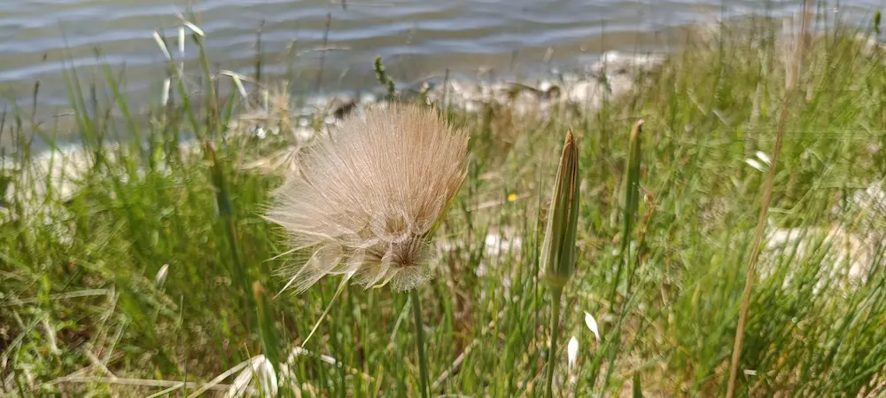
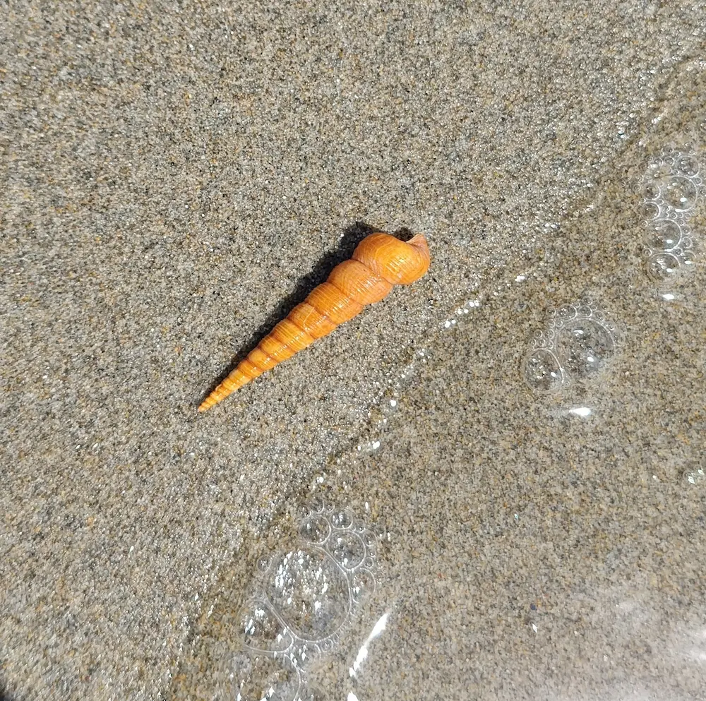
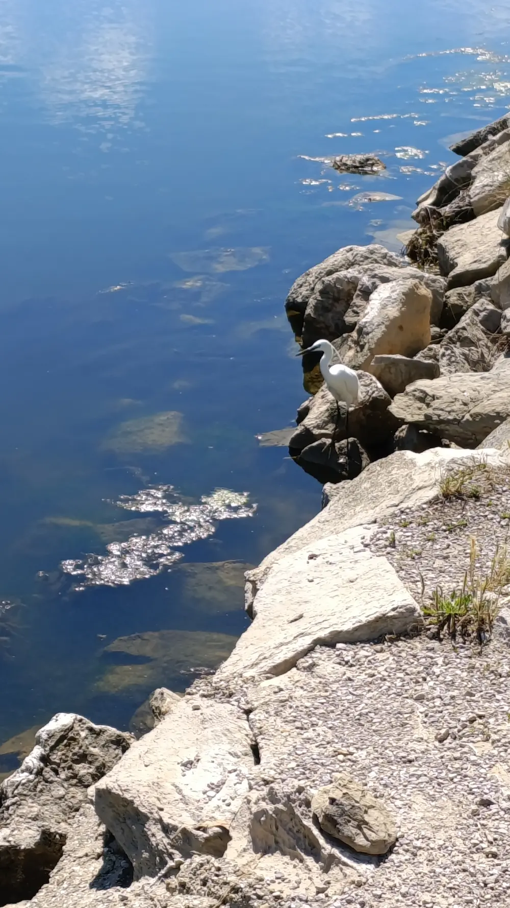
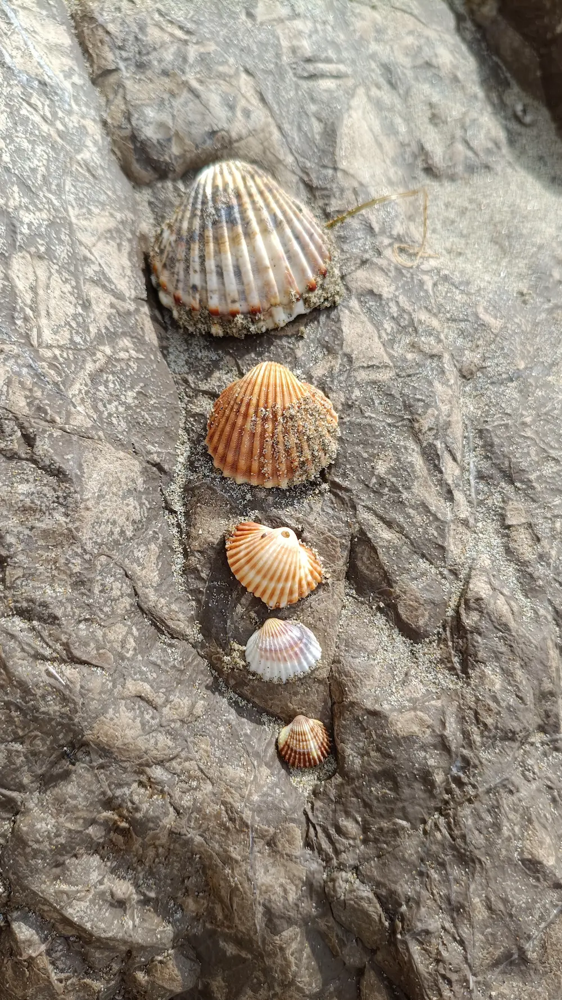
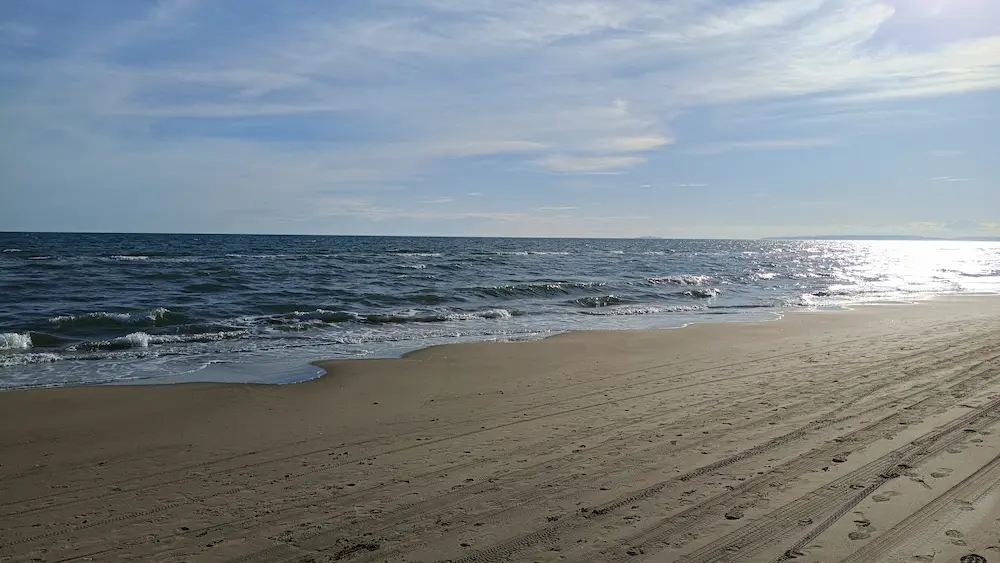
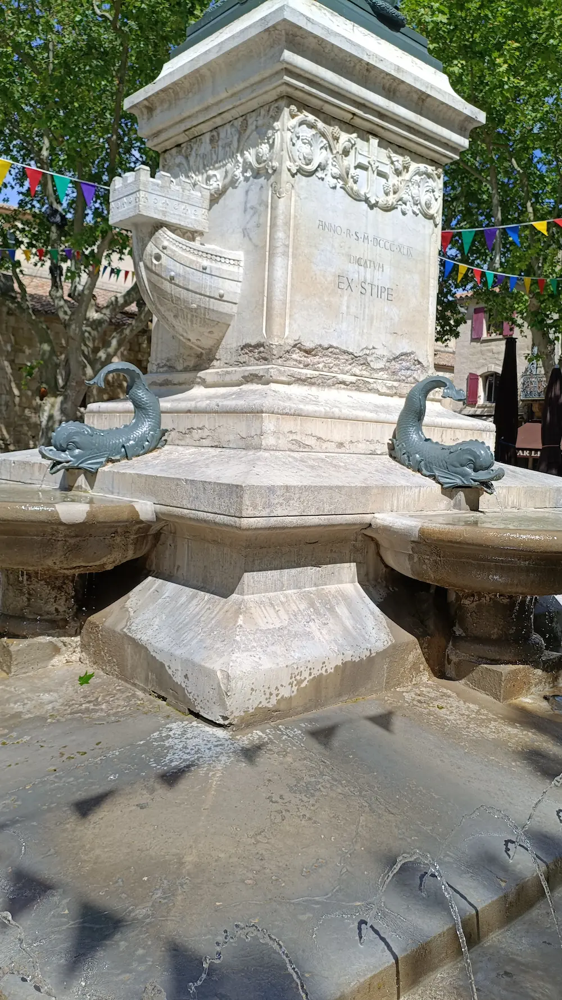
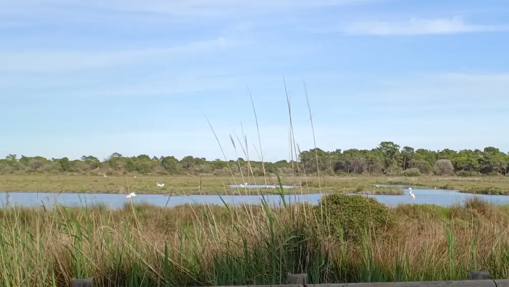
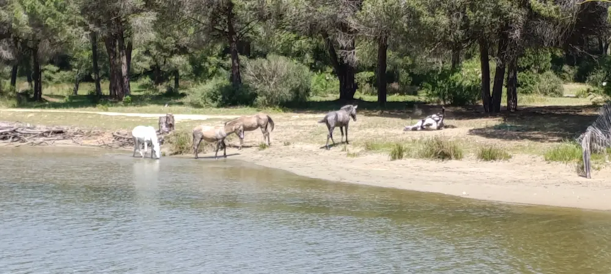

Excursion au Grau-du-Roi du 07/05/2026 au 09/05/2026

Ces quelques jours sur la côte d’Azur étaient les bienvenus. Nous avons pu profiter à la fois de la mer, des oiseaux de Camargue et des moustiques !

Mis à part ces derniers, tout était chouette. Se balader le long de la plage, les pieds dans l’eau, est vraiment super. Pouvoir aller nager aussi. Et j’adore les coquillages.


Nous avons pu nous promener autour de l’étang de La Grande Motte, ainsi que dans la ville médiévale d’Aigues Mortes. C’était sympa, mais pas extraordinaire non plus.

L’architecture côtière est assez surprenante, et plutôt laide. Regarder les rives de La Grande Motte depuis la plage du Grau-du-Roi, c’est comme contempler les ruines d’un monde post-apocalyptique.

Les remparts médiévaux d’Aigues Mortes en imposent, mais tout est trop « touristisé ». Ça manque d’authenticité et de charme. Tout comme les rues et le port du Grau-du-Roi d’ailleurs. Cette fontaine aavec de drôles de poissons mécontents est quand-même classe.

Le plus chouette était donc les balades pour voir les flamants roses et la plage (des kilomètres et des kilomètres de plage). On a même vu des chevaux sauvages (enfin, peut-être…) ! Quelle chance.

L’appartement que nous avions loué était satisfaisant et bien localisé. Et la route se fait plutôt bien. C’était un chouette week-end.